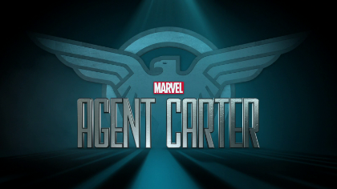
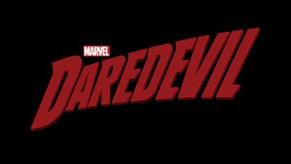

Сериалы
«Аге́нты „Щ. И.Т.“» — американский супергеройский телесериал,
созданный
Джоссом Уидоном и основанный на одноимённом комиксе компании Marvel о вымышленной организации по
борьбе с преступностью, является частью кинематографической вселенной Marvel. История начинается
с
того, что агент Фил Колсон (Кларк Грегг), который выжил после событий фильма «Мстители»,
работает в
«Щ. И.Т.» вместе с новой командой.
Разработка проекта началась летом 2012 года, а в конце августа канал ABC дал зелёный свет на съёмки пилотного эпизода. Сериал вышел на ABC в сезоне 2013—2014 годов[2][3] и транслируется по вторникам в восемь вечера, став лид-ином для новых комедий канала «Голдберги» и «Третья жена»[4], начиная с 24 сентября[5].
Разработка проекта началась летом 2012 года, а в конце августа канал ABC дал зелёный свет на съёмки пилотного эпизода. Сериал вышел на ABC в сезоне 2013—2014 годов[2][3] и транслируется по вторникам в восемь вечера, став лид-ином для новых комедий канала «Голдберги» и «Третья жена»[4], начиная с 24 сентября[5].

«Аге́нт Ка́ртер» — американский телевизионный сериал, созданный на
основе комиксов Marvel, с Хэйли Этвелл в главной роли агента Пегги Картер, которая работает в
1946
году. Сериал вышел на ABC в сезоне 2014—2015 годов. В отличие от «Агентов „Щ.И.Т.“», в сериале
представлено одно дело на сезон, без так называемого «case-of-the-week»[2]. Первый сезон сериала
стартовал 6 января 2015 года[3].
7 мая 2015 года сериал был продлён на второй сезон. Второй сезон вышел на канале ABC 19 января
2016
года во время сезонного перерыва «Агентов Щ.И.Т.» и состоит из 10 серий. Несмотря на
положительную
критику, из-за низких рейтингов 12 мая 2016 года ABC объявили о закрытии сериала «Агент Картер»

«Сорвиголова́» — американский супергеройский телесериал,
созданный Дрю
Годдардом и основанный на одноимённом персонаже комиксов Marvel, главную роль в котором
исполняет
Чарли Кокс. Продюсированием занимаются студии Marvel Television и ABC Studios, а показ
осуществляется через потоковый видеосервис Netflix. «Сорвиголова» входит в
кинематографическую
вселенную Marvel и является первым из серии сериалов, которые объединятся в кроссоверный
мини-сериал
«Защитники». Шоураннером сериала выступает Стивен Денайт, а Годдард — консультантом.
Премьера всех
серий первого сезона состоялась 10 апреля 2015 года[3]. 21 апреля стало известно, что сериал
был
продлен на второй сезон. В июле 2016 года сериал был продлён на третий сезон[5], он вышел 19
октября 2018 года.
